Onboarding como superfície de produto
Produtos financeiros precisam coletar informações sensíveis antes que os usuários vejam qualquer valor. Isso torna os primeiros passos da experiência a parte mais frágil do fluxo. Formulários longos, requisitos pouco claros e gates forçados de criação de conta podem matar a ativação antes mesmo do cadastro terminar.
0
gates forçados de criação de conta · acesso como convidado com revelação progressiva
1
pergunta por tela · tipo de conta definido antes de qualquer campo de formulário aparecer
6
etapas visíveis desde a primeira tela · stepper persistente elimina a incerteza

Estado atual · onboarding fintech padrão
A experiência de onboarding é onde requisitos regulatórios e o momentum do usuário colidem. Tratar isso como uma simples entrega técnica ignora que cada ponto de fricção nesse fluxo é uma decisão de design.
O conceito
NorthPay é um fluxo conceitual de onboarding fintech, da seleção do tipo de conta até a verificação KYC e a configuração de primeiro uso.
Todo campo em um formulário de onboarding fica entre o usuário e o produto. A sequência em que esses campos aparecem é uma decisão de design, não um requisito de compliance.
Onboarding é o ponto onde primeiras impressões, restrições regulatórias e taxas de conversão convergem na mesma sequência de telas.
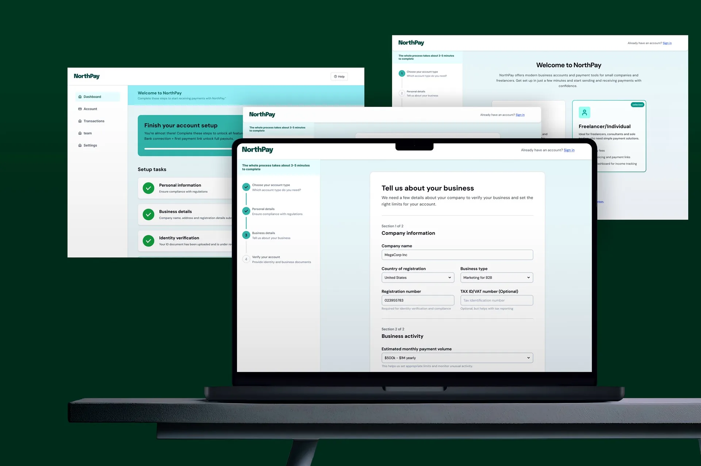
Problema & contexto
Produtos financeiros precisam coletar informações sensíveis antes que os usuários vejam qualquer valor. Isso torna o onboarding a parte mais frágil do fluxo. As pessoas estão criando uma conta, compartilhando dados pessoais e esperando por verificação sem ainda saber se algo disso vale o tempo delas.
Usuário
Por que isso é tão longo?
Muitos campos de uma vez, nenhuma indicação de quantas etapas faltam, nenhum motivo visível para confiar no produto que está pedindo dados sensíveis.
Negócio
Onde eles estão abandonando?
Criar conta antes de ver qualquer valor do produto é o maior ponto de abandono no onboarding. O KYC adiciona mais uma camada em cima disso.
Compliance
Precisamos de tudo isso
Todo campo que parece excessivo para o usuário está ali porque a regulação exige; o ajuste está em como ele é apresentado.
Formulários longos, requisitos pouco claros e feedback fraco travam a ativação antes mesmo do produto ser usado. Todo campo na sequência é exigido por regulação. Como essa sequência é apresentada é uma decisão de design.
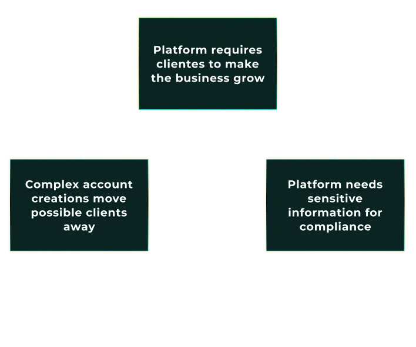
Desafio de design
O desafio era estrutural: como coletar tudo que o compliance exige mantendo os usuários orientados em cada etapa. Um ponto final visível e um padrão fixo de uma pergunta por tela resolvem os dois.
Abordagem padrão
Mostrar tudo de uma vez. Todos os campos em uma tela, todas as etapas implícitas. O usuário não sabe quanto tempo isso vai levar até já estar no meio disso. É aí que ele desiste.
Abordagem NorthPay
Uma pergunta por vez. Contagem de etapas visível desde a primeira tela. Tipo de conta selecionado antes de qualquer formulário abrir. Cada próxima etapa é conquistada ao completar a atual.
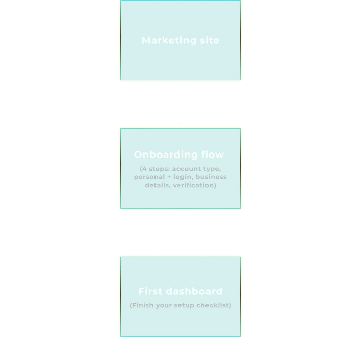
IA & fluxo de usuário
A experiência de onboarding é dividida em um ponto de entrada público e um fluxo de produto protegido por login. Dentro do produto, uma sequência simples guia os usuários do tipo de conta até a verificação, com ramificação clara entre contas pessoais e empresariais.
Tipo de conta é a primeira decisão. Todo campo que vem depois depende dela. Colocá-la na primeira tela elimina o pior modo de falha: trocar o tipo no meio do formulário e perder todos os dados já preenchidos.
O fluxo tem três fases: seleção de conta, coleta de identidade e verificação. As três são visíveis no stepper desde a primeira etapa, então nenhuma fase é uma surpresa quando se abre.
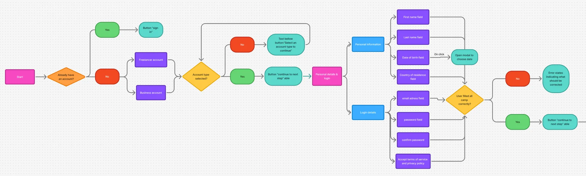
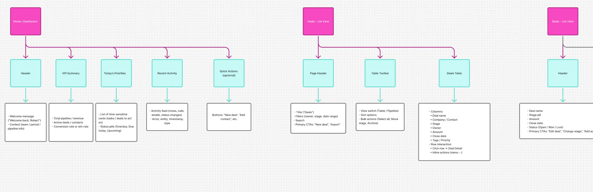
Wireframes & decisões de UX
Wireframes de baixa fidelidade definiram a estrutura e a sequência antes de qualquer decisão visual. Um stepper persistente mostra aos usuários onde eles estão e o que falta. Campos agrupados mantêm cada tela focada em uma única etapa.
Uma pergunta por tela é mais lento de construir e mais rápido de completar. A complexidade percebida cai quando cada tela tem uma única função e a deixa óbvia.
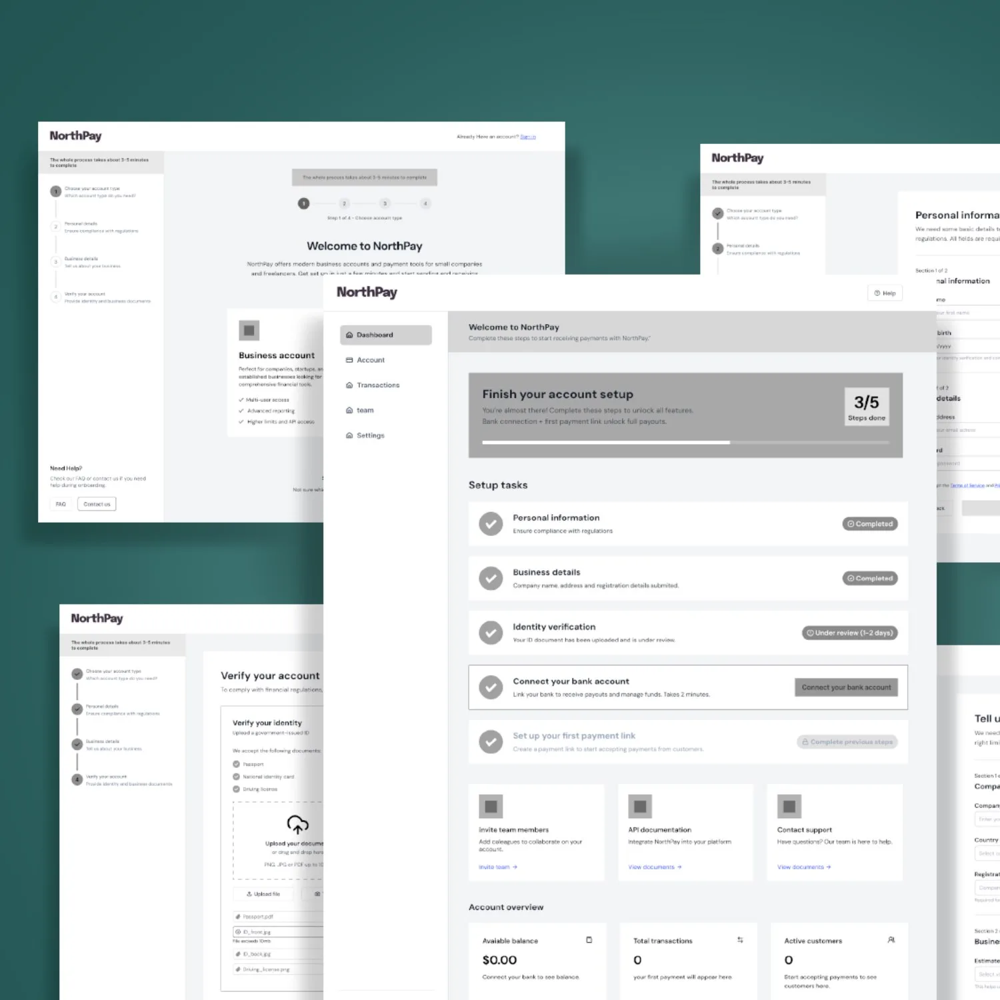
Interações e estados-chave
As interações que importam nesse fluxo são as que lidam com falha: erros inline nos campos, um estado de verificação pendente e um stepper que nunca esconde as etapas restantes.
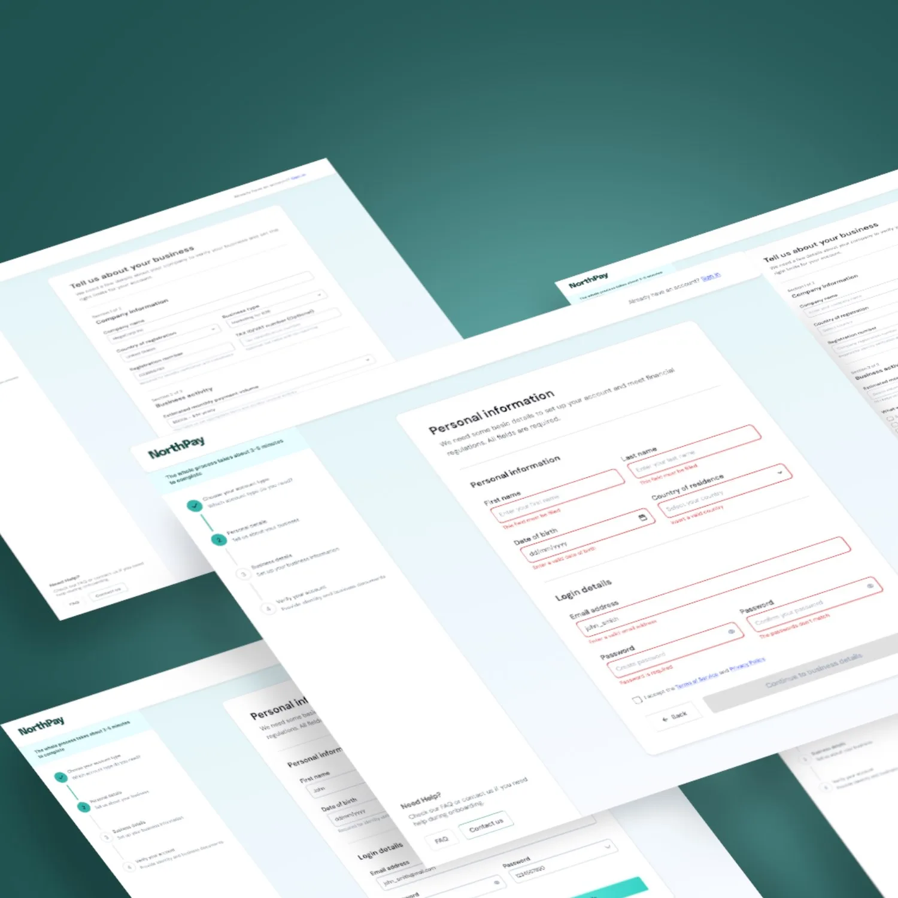
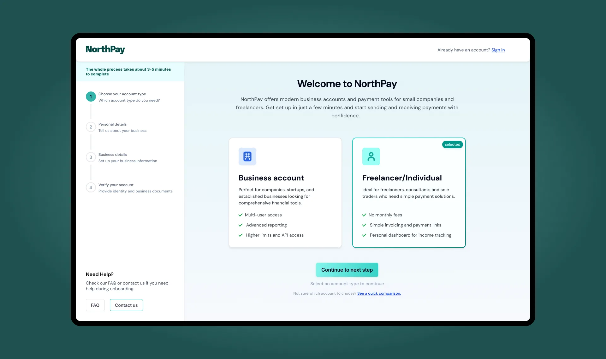
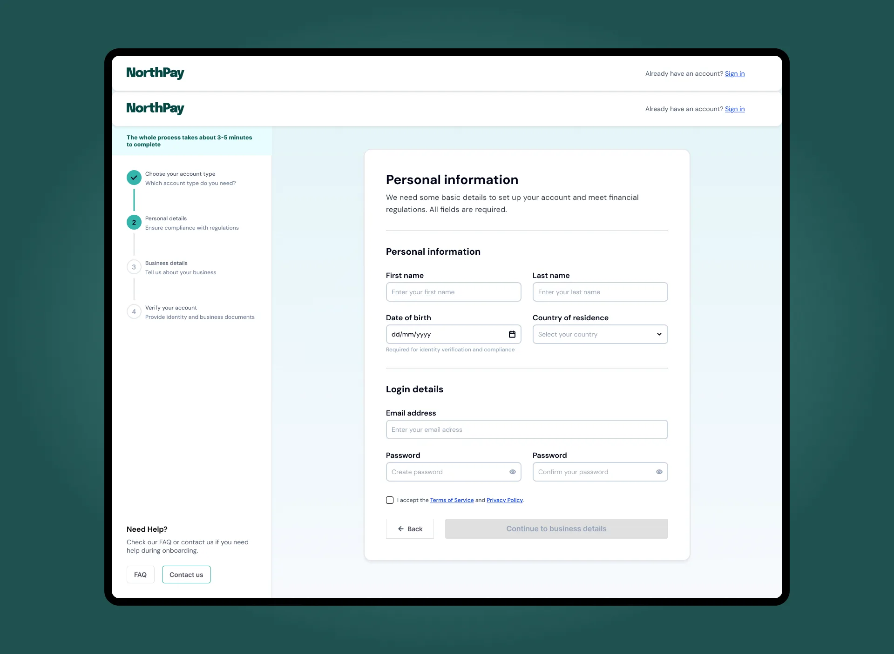
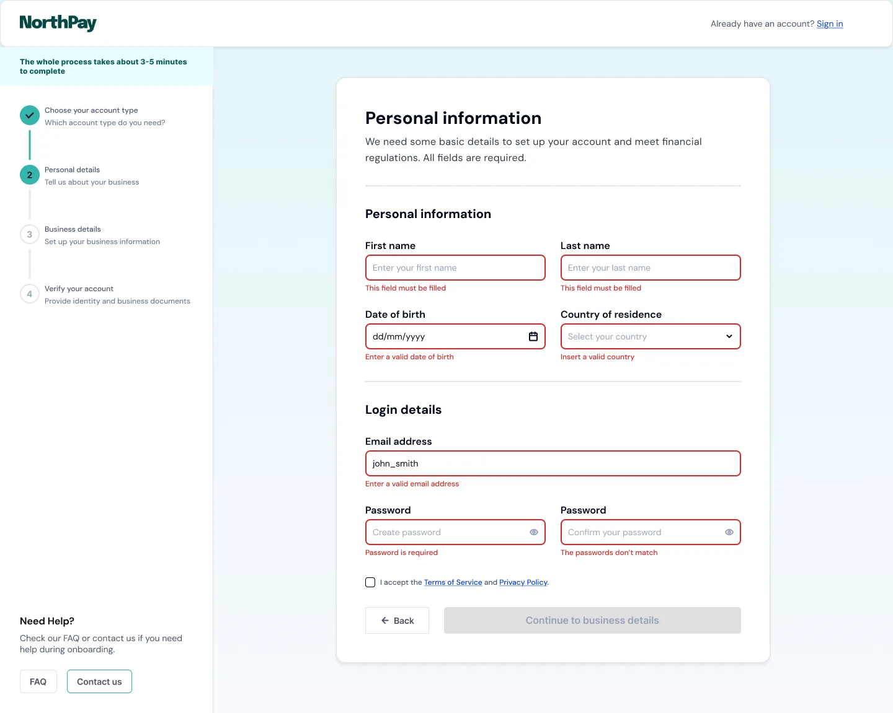
Telas finais
A verificação confirma a conta. Os usuários chegam a um checklist de configuração que substitui um dashboard vazio por uma próxima ação clara, sem antecipar todas as opções de uma vez.
19%
Taxa de abandono por criação forçada de conta. Removida dos dois fluxos: entrada como convidado, gates de conta movidos para depois da primeira entrega de valor.
Baymard, 2024
80%
Abandono de checkout mobile resolvido com telas de pergunta única e progresso visível de 6 etapas
Baymard, 2024
1
Decisão por tela. Tipo de conta definido antes de qualquer coleta de dados começar.
Padrão de interação
0
Troca de tipo no meio do formulário. A escolha de conta é travada antes do formulário abrir, evitando perda de dados.
Decisão de UX
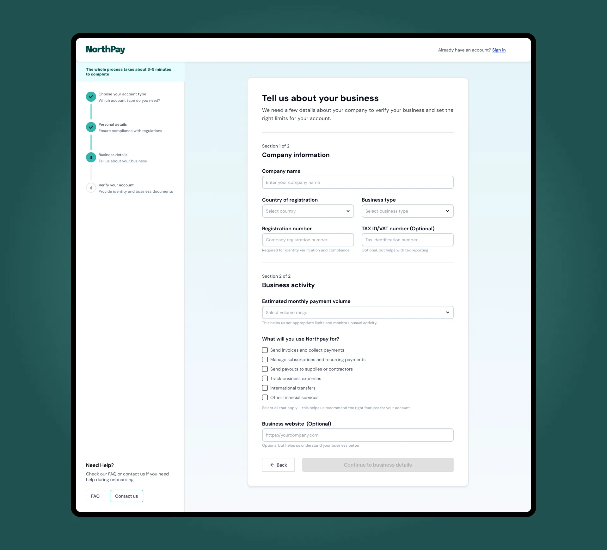
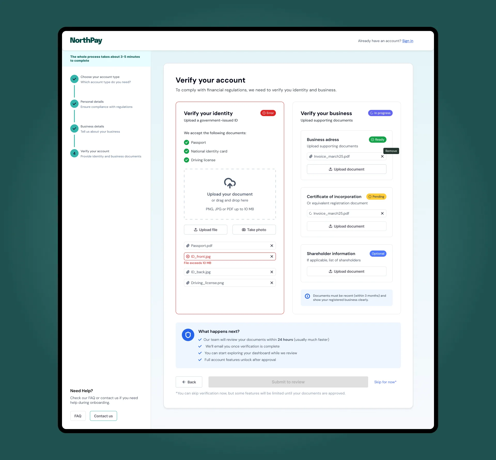
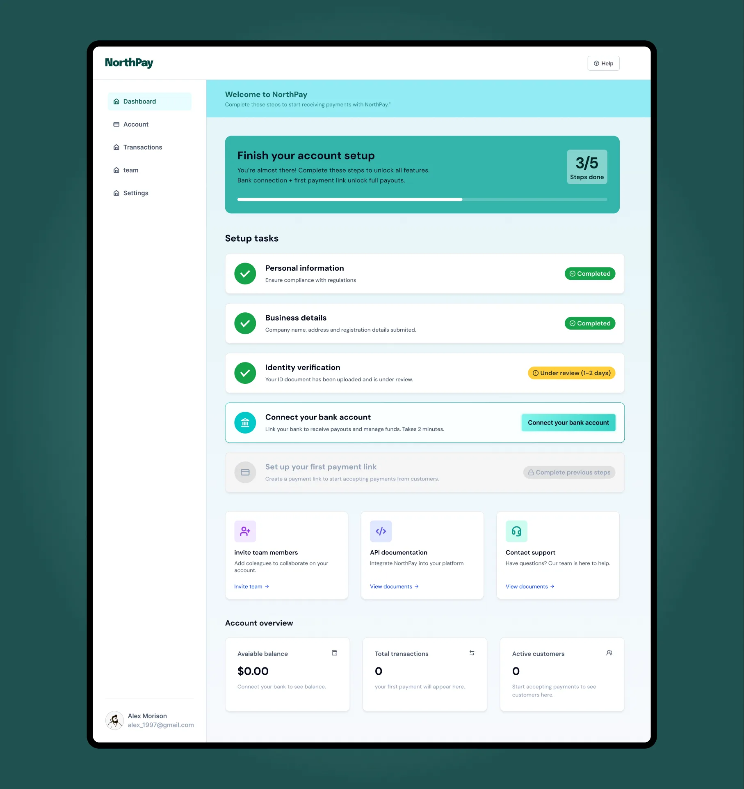
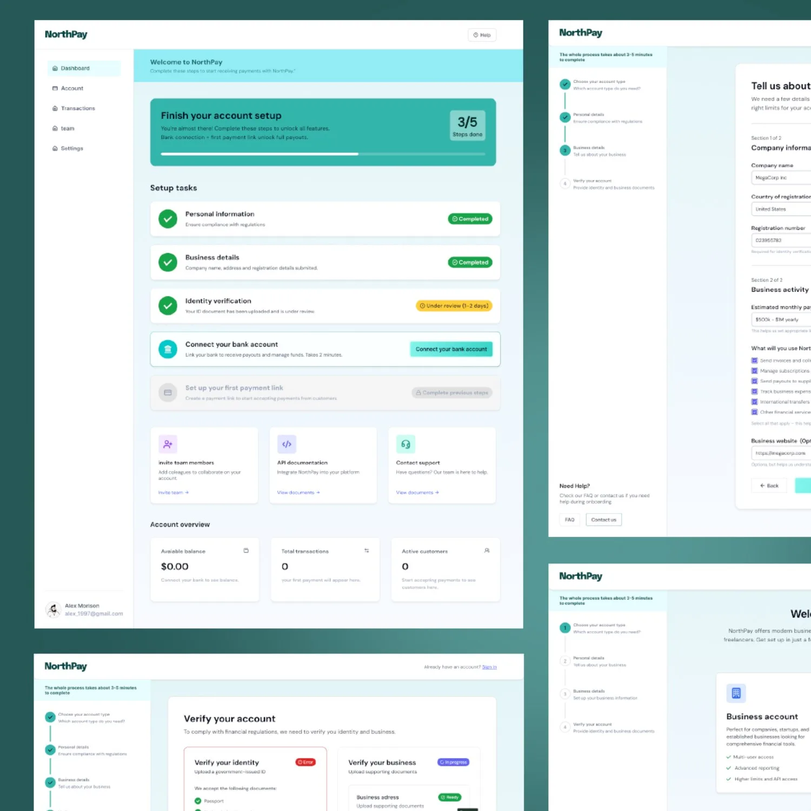
Reflexões
Não desenhei para conclusão em múltiplas sessões. O stepper persistente funciona para uma única visita. No fintech real, o KYC pode se estender por dias: revisão manual de documentos, filas de verificação de identidade, checagens pendentes de registro empresarial. O fluxo precisa de um estado de salvar e retomar que eu não tratei.
As restrições de compliance foram simuladas. Por ser um conceito, eu controlei a sequência de campos por completo. Em um projeto real, as regulações de AML e KYC ditariam quais campos aparecem juntos e em qual ordem. Eu gostaria de mapear os requisitos legais antes de finalizar o padrão de uma pergunta por tela.
A abordagem rejeitada merecia um contra-argumento melhor. Meu wireframe do "tipo de conta mais campos de formulário em uma única tela" era obviamente ruim por design. Uma validação honesta construiria bem essa versão, não como um espantalho, e compararia os índices de usabilidade com a abordagem de uma pergunta por vez.
Vamos conversar
Aberto pra próxima posição.
Vamos conversar.